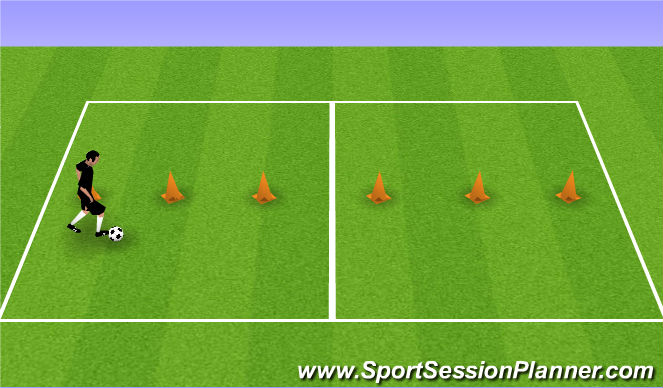
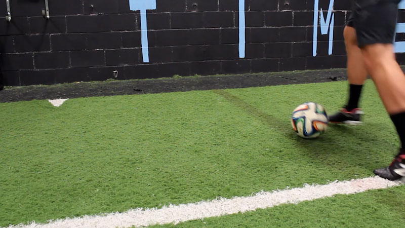
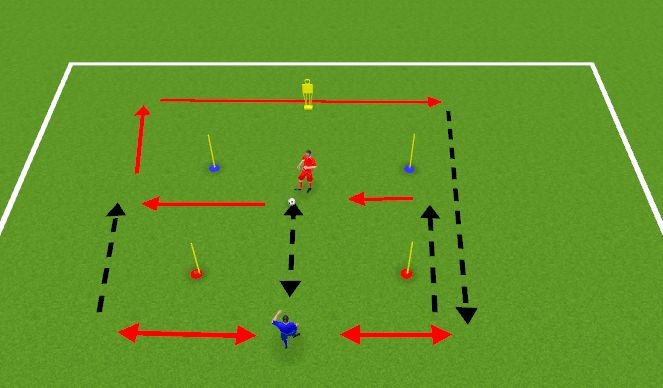
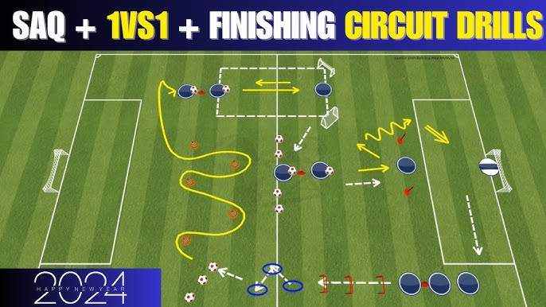
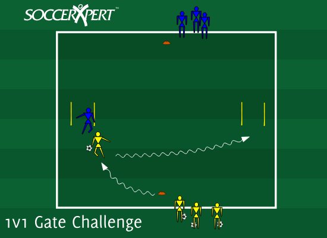

These are some of the drills players complete during a typical SST session.

Players dribble through cones using both feet to improve close control and change of direction.

Quick one-touch passing against a wall to improve passing accuracy and first touch.

Players receive passes inside a small square and control the ball under pressure.

Multiple shooting angles are used to improve composure and finishing technique.

Players attack and defend small gates to build confidence and decision making.